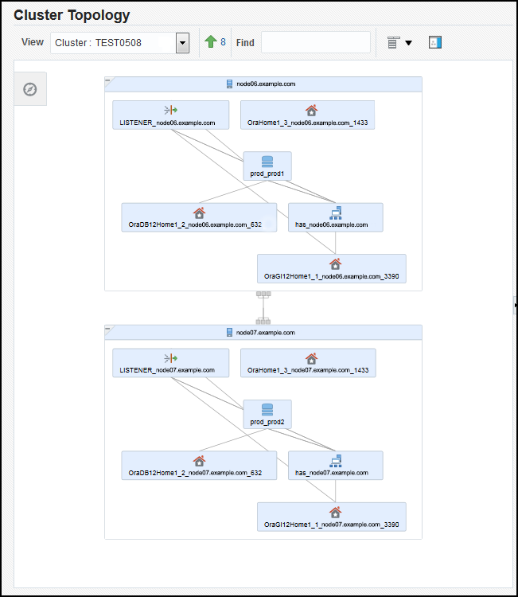

10 Monitoring and Troubleshooting Your Cluster
You can use the Autonomous Health Framework to monitor and troubleshoot your cluster.
Topics:
- Autonomous Health Framework
Autonomous Health Framework is a collection of tools that can analyze the collected data, and proactively identify issues before they affect the health of your clusters or your Oracle RAC databases. - Monitoring Oracle Clusterware Using Enterprise Manager
You can use Enterprise Manager to monitor Oracle Clusterware. - Troubleshooting Configuration Problems in Oracle RAC Environments
The Cluster Ready Services Control (CRSCTL) commandcheckenables you to determine the status of several Oracle Clusterware components simultaneously.
See Also:
-
Oracle Real Application Clusters Administration and Deployment Guide for more information about diagnosing problems for Oracle Real Application Clusters components
-
Oracle Clusterware Administration and Deployment Guide for more information about diagnosing problems for Oracle Clusterware components
10.1 Autonomous Health Framework
Autonomous Health Framework is a collection of tools that can analyze the collected data, and proactively identify issues before they affect the health of your clusters or your Oracle RAC databases.
The majority of the tools that make up Autonomous Health Framework are already available in Oracle Database 12c release 1. In Oracle Database 12c release 2, the output of several tools is consolidated in the Grid Infrastructure Management Repository and analyzed in real-time to detect patterns which can indicate the development of issues on the production clusters.
Topics:
- Cluster Verification Utility (CVU)
The Cluster Verification Utility (CVU) can assist you in diagnosing a wide variety of configuration problems. As part of Autonomous Health Framework, CVU can perform these checks periodically by running autonomously on a scheduled basis. - ORAchk
As part of Autonomous Health Framework, ORAchk is configured to run in Daemon Mode. ORAchk proactively scans for known problems within a wide range of products and autonomously reports on these issues. - Cluster Health Monitor
Cluster Health Monitor is integrated part of Oracle Grid Infrastructure. Cluster Health Monitor collects operating system statistics using operating system APIs to gain performance and reduce the CPU usage overhead. - Cluster Health Advisor
The Cluster Health Advisor daemon collects data from Oracle Real Application Clusters (Oracle RAC), Oracle RAC One Node databases, and the host operating system and hardware resources, to analyze and produce a root cause and action after finding a database or host performance issue. - Trace File Analyzer Collector
Trace File Analyzer centralizes and automates the collection of diagnostic information. - Hang Manager
Hang Manager can reliably detect and resolve hung database sessions in a timely manner. - Managing Memory Pressure for Database Servers
Memory Guard detects memory pressure on a server in real time and redirects new sessions to other servers to prevent using all available memory on the stressed server. - Oracle Database Quality of Service Management
Oracle Database Quality of Service (QoS) Management is an automated, policy-based product that monitors the workload requests for an entire system.
10.1.1 Cluster Verification Utility (CVU)
The Cluster Verification Utility (CVU) can assist you in diagnosing a wide variety of configuration problems. As part of Autonomous Health Framework, CVU can perform these checks periodically by running autonomously on a scheduled basis.
Cluster Verification Utility (CVU) performs system checks in preparation for installation, patch updates, or other system changes. Using CVU ensures that you have completed the required system configuration and preinstallation steps so that your Oracle Grid Infrastructure or Oracle Real Application Clusters (Oracle RAC) installation, update, or patch operation, completes successfully.
Oracle Universal Installer is fully integrated with CVU, automating many CVU prerequisite checks. Oracle Universal Installer runs all prerequisite checks and associated fixup scripts when you run the installer.
Topics:
- Verifying the Existence of Node Applications
You use the CVUcomp nodeappcommand to verify the existence of node applications, namely the virtual IP (VIP), Oracle Notification Services (ONS), and Global Service Daemon (GSD), on all the nodes. - Verifying the Integrity of Oracle Clusterware Components
You use the CVUcomp crscommand to verify the existence of all the Oracle Clusterware components. - Verifying the Integrity of the Oracle Cluster Registry
You use the CVUcomp ocrcommand to verify the integrity of the Oracle Clusterware registry. - Verifying the Integrity of Your Entire Cluster
Use the CVUcomp clucommand to check that all nodes in the cluster have the same view of the cluster configuration. - Checking the Settings for the Interconnect
Use the CVUcomp nodereachorcomp nodeconcommand to check the settings for the interconnect. - Enabling Tracing
CVU does not generate trace files unless you enable tracing.
10.1.1.1 Verifying the Existence of Node Applications
You use the CVU comp nodeapp command to verify the existence of node applications, namely the virtual IP (VIP), Oracle Notification Services (ONS), and Global Service Daemon (GSD), on all the nodes.
To verify the existence of node applications:
See Also:
-
"Troubleshooting Configuration Problems in Oracle RAC Environments"
-
Oracle Clusterware Administration and Deployment Guide for more information about the Cluster Verification Utility
10.1.1.2 Verifying the Integrity of Oracle Clusterware Components
You use the CVU comp crs command to verify the existence of all the Oracle Clusterware components.
To verify the integrity of Oracle Clusterware components:
See Also:
-
Oracle Clusterware Administration and Deployment Guide for more information about the Cluster Verification Utility
10.1.1.3 Verifying the Integrity of the Oracle Cluster Registry
You use the CVU comp ocr command to verify the integrity of the Oracle Clusterware registry.
To verify the integrity of the Oracle Clusterware registry:
See Also:
-
Oracle Clusterware Administration and Deployment Guide for more information about the Cluster Verification Utility
10.1.1.4 Verifying the Integrity of Your Entire Cluster
Use the CVU comp clu command to check that all nodes in the cluster have the same view of the cluster configuration.
To verify the integrity of your cluster:
See Also:
-
Oracle Clusterware Administration and Deployment Guide for more information about the Cluster Verification Utility
10.1.1.5 Checking the Settings for the Interconnect
Use the CVU comp nodereach or comp nodeconcommand to check the settings for the interconnect.
Cache Fusion enhances the performance of Oracle RAC by utilizing a high-speed interconnect to send data blocks to another instance's buffer cache. The high-speed interconnect should be a private network with the highest bandwidth to maximize performance.
For network connectivity verification, CVU discovers all the available network interfaces if you do not specify an interface on the CVU command line.
To check the settings for the interconnect:
See Also:
-
Oracle Clusterware Administration and Deployment Guide for more information about the Cluster Verification Utility
10.1.1.6 Enabling Tracing
CVU does not generate trace files unless you enable tracing.
The CVU trace files are created in the ORACLE_BASE/crsdata/host_name/cvu directory by default. Oracle Database automatically rotates the log files and the most recently created log file has the name cvutrace.log.0. You should remove unwanted log files or archive them to reclaim disk place if needed.
To enable tracing using CVU:
See Also:
Oracle Clusterware Administration and Deployment Guide for more information about enabling tracing
10.1.2 ORAchk
As part of Autonomous Health Framework, ORAchk is configured to run in Daemon Mode. ORAchk proactively scans for known problems within a wide range of products and autonomously reports on these issues.
ORAchk replaces the popular RACcheck tool, extending the coverage based on prioritization of top issues reported by users. You can configure ORAchk to upload its findings to the Collection Manager Repository for centralized examination and analysis.
To obtain the most out of ORAchk, Oracle recommends that you run ORAchk as the root user (via password or SUDO).
Topics:
- Overview of Oracle ORAchk
Oracle ORAchk provides a lightweight and non-intrusive health check framework for the Oracle stack of software and hardware components. - Running ORAchk
You can schedule ORAchk to run at periodic intervals or you can run it as needed. - ORAchk HTML Report Output
Oracle ORAchk generates a detailed HTML report with findings and recommendations.
10.1.2.1 Overview of Oracle ORAchk
Oracle ORAchk provides a lightweight and non-intrusive health check framework for the Oracle stack of software and hardware components.
Oracle ORAchk is provided as a value add-on to your existing support contract. There is no additional fee or license required to run Oracle ORAchk.
Features of ORAchk
-
Automates risk identification and proactive notification before business is impacted.
-
Runs health checks based on critical, reoccurring problems across Oracle customer base.
-
Runs in your environment with no need to send anything to Oracle.
-
Enables you to schedule email health check reports.
-
Integrates the findings into other tools of your choice.
The scope of Oracle ORAchk increases with new releases. The following is the current scope:
Oracle Database
-
Single-instance Oracle Database
-
Oracle Grid Infrastructure and Oracle RAC
-
Maximum Availability Architecture (MAA) validation
-
Upgrade Readiness validation
-
Oracle GoldenGate
-
Application Continuity
Enterprise Manager Cloud Control (12c only)
-
Management Repository
-
Management Agents
-
Oracle Management Service (OMS), version 12.1.0.1 and later on Linux only
Oracle Hardware Systems
-
Oracle Solaris
-
Oracle Solaris Cluster
-
Oracle Systems configuration for Oracle Middleware and Oracle Applications
-
Oracle ZFS Storage Appliance
-
Oracle Virtual Networking
10.1.2.2 Running ORAchk
You can schedule ORAchk to run at periodic intervals or you can run it as needed.
Oracle recommends to use the daemon process to schedule recurring health checks at regular intervals.
Configure the daemon to:
-
Schedule recurring health checks at regular interval.
-
Send email notifications when the health check runs complete, clearly showing any differences since the last run.
-
Purge collection results after a pre-determined period.
-
Check and send email notification about stale passwords.
-
Store multiple profiles for automated health check runs.
-
Restart automatically if the server or node where it is running restarts.
Oracle recommends that you run on-demand health checks in the following scenarios:
-
Pre or post-upgrades
-
Machine moves from one subnet to another
-
Hardware failure or repair
-
Problem troubleshooting
-
In addition to go-live testing
Oracle ORAchk generates a detailed HTML report with findings and recommendations.
For the subsequent health check runs after the first email notification, the daemon emails the diff report of the current run and the immediate past run to all users specified in the NOTIFICATION_EMAIL list.
The email notification message contains:
-
System Health Score of this run compared to previous.
-
Summary of number of checks run and differences between runs.
-
Most recent report result as attachment.
-
Previous report result as attachment.
-
Diff report as attachment.
See Also:
Oracle Autonomous Health Framework User's Guide for more information about using and configuring ORAchk.10.1.2.3 ORAchk HTML Report Output
Oracle ORAchk generates a detailed HTML report with findings and recommendations.
The Health Check HTML report contains the following:
-
High level health score.
-
Summary of the run.
-
Table of contents that provides easy access to findings.
-
Findings and recommendations to resolve the issues.
System Health Score and Summary
Oracle ORAchk calculates a high level System Health Score based on the number of checks that passed or failed. A summary of the run shows, which includes the following information:
-
The cluster name
-
The operating system and software versions
-
The EM Agent home directory
-
Cluster information — the number of nodes, the number of database servers, the number of storage servers, and the number of IB switches
-
The version of ORAchk
-
The name of the collection file
-
The duration of the ORAchk run
-
The user that started ORAchk
-
The date that ORAchk was run
HTML Report Table of Contents and Features
The Table of Contents provides links to each of the major sections within the HTML report.
The Report Features allow you to:
-
Filter checks based on their statuses.
-
Select the regions.
-
Expand or collapse all checks.
-
View check IDs.
-
Remove findings from the report.
-
Get a printable view.
HTML Report Findings
Report findings are grouped by Oracle Stack component. Findings include:
-
Status of check (
FAIL,WARNING,INFO, orPASS). -
Type of check.
-
Check message.
-
Location where the check was run.
-
Link to expand details for further findings and recommendations.
For any of the findings you can click View to see the findings and the recommendations, which can include:
-
Solution to solve the problem.
-
Applicable recommendations.
-
Where the problem does not apply.
-
Links to relevant documentation or My Oracle Support Notes.
-
Example of data the recommendation is based on.
Maximum Availability Architecture (MAA) Scorecard
The Maximum Availability Architecture (MAA) Scorecard is displayed after the Findings group.
The MAA Scorecard provides a set of best practices for maximum availability architecture. It also shows results related to maximum availability, such as the installed software versions checked for noncurrent software, and use of incompatible features.
Findings Needing Further Review
Issues that health checks have only a partial view and need user reviews to determine if they are relevant are displayed in the Findings needing further review section.
Platinum Certification
The Platinum Certification section shows a list of compliance status items for the Oracle Platinum service. For the existing Platinum customers it is a review. For customers not yet participating in Oracle Platinum, it is an indication of readiness to participate in Oracle Platinum.
Clusterwide Linux Operating system Health Check (VMPScan)
A summary of the VMPScan report is shown in the Clusterwide Linux Operating System Health Check (VMPScan) section of the report.
The full VMPScan report is also available within the collection/reports and collection/outfiles/vmpscan directory.
File Attribute Changes
The File Attribute Changes section is shown in the report only when you run Oracle ORAchk with the –fileattr option.
Skipped Checks
Any checks that were not able to be run and skipped for some reason are shown in the Skipped Checks section.
Component Elapsed Times
The Component Elapsed Times gives a breakdown of time required to check various components.
This can be useful when diagnosing performance problems.
Top 10 Time Consuming Checks
The Top 10 Time Consuming Checks section shows the slowest 10 checks that were run.
This can be useful when diagnosing performance problems.
10.1.3 Cluster Health Monitor
Cluster Health Monitor is integrated part of Oracle Grid Infrastructure. Cluster Health Monitor collects operating system statistics using operating system APIs to gain performance and reduce the CPU usage overhead.
Cluster Health Monitor collects operating system statistics (system metrics) such as memory and swap space usage, processes, IO usage, and network related data. The Cluster Health Monitor collects information in real time and usually once a second. Cluster Health Monitor collects as much of system metrics and data as feasible that is restricted by the acceptable level of resource consumption by the tool.
Cluster Health Monitor provides system metrics and data for troubleshooting many different types of problems such as node reboot, instance eviction, server hang, severe performance degradation, and any other problems that need the system metrics and data. By monitoring the data constantly, users can use Cluster Health Monitor detect potential problem areas such as CPU load, memory constraints, and spinning processes before the problem causes an unwanted outage.
The information collected by Cluster Health Monitor is stored in the Grid Infrastructure Management Repository (GIMR). GIMR is a centralized infrastructure database for diagnostic and performance data and resides in the Grid home. It is a single instance multitenant database with a single pluggable database (PDB). It includes partitioning (for data lifecycle management). GIMR clients include: Cluster Health Monitor, Rapid Home Provisioning, Enterprise Manager Cloud Control, and Trace File Analyzer. Cluster Health Monitor puts all of its operating system metric data in GIMR. Rapid Home Provisioning uses GIMR to persist metadata about each of the database homes that it services. Enterprise Manager Cloud Control and Trace File Analyzer retrieve data from GIMR, predominantly Cluster Health Monitor data.
You can review the information collected by Cluster Health Monitor using either diagcollection.pl or oclumon:
-
Diagcollection.pl: As the
griduser, using commandGrid_home/bin/diagcollection.pl --collect --chmosproduces output for all the data collected in the repository. Because there might be a lot of data, this could take a long time. It is better to limit the query to an interesting time interval.Grid_home/bin/diagcollection.pl --collect --crshome Grid_home --chmos --incidenttime start_time --incidentduration 05:00The above command generates a report that covers 5 hours from the time specified by
incidenttime. Theincidenttimemust be in the formMM/DD/YYYYHH:MN:SSwhereMMis month,DDis date,YYYYis year,HHis hour in 24 hour format,MNis minute, andSSis second. For example, if you want to put the incident time to start from 10:15 PM on June 01, 2016, the incident time is 06/01/201622:15:00. Theincidenttimeandincidentdurationcan be changed to capture more data. -
oclumon: Alternatively, you can use the command
oclumon dumpnodeview -allnodes -v -last "11:59:59" > output-filename’ ifdiagcollection.plfails with any reason. This command generates a report from the repository up to last 12 hours. The-lastvalue can be changed to get more or less data.
10.1.4 Cluster Health Advisor
The Cluster Health Advisor daemon collects data from Oracle Real Application Clusters (Oracle RAC), Oracle RAC One Node databases, and the host operating system and hardware resources, to analyze and produce a root cause and action after finding a database or host performance issue.
The user can initiate a calibration process to generate data from which a predictive analysis data set is created. This baseline operation model is then evaluated every five seconds to determine whether an abnormal condition has occurred and is progressing, along with its root cause, details, and corrective actions. This data evidence persists in the Grid Infrastructure Management Repository database for reporting to Oracle Enterprise Manager Cloud Control.
The Cluster Health Advisor daemon provides system and database administrators with early warning of pending performance issues, and root causes and corrective actions for Oracle RAC databases and cluster nodes. This advanced proactive diagnostic capability will increase availability and performance management.
To track the online health of an Oracle RAC system, Cluster Health Advisor analyzes the system’s measurements (taken as samples of the operational state of a running system) to detect whether the measured values are within an established normal base line, or if they are drifting anomalously beyond their acceptable perimeter. If Cluster Health Advisor detects irregularities in any of the measured values, it invokes an incident diagnostic engine to determine the identity of the underlying issue and generates incident details. The analysis cycle repeats periodically with a fresh set of sampled measurements to track the health status of the system over time.
To view the findings of Cluster Health Advisor, you can use:here is a and a command-line interface. Graphical interfaces include:
-
Graphical interface
-
Enterprise Manager Cloud Control
-
A standalone specialized console dedicated to depicting Cluster Health Advisor analysis
-
-
Command line interface — CHACTL
Example 10-1 Using CHACTL to Review Cluster Health Advisor Findings
Here is an example of using CHACTL to review the findings of Cluster Health Advisor:
$ chactl query diagnosis –start start_time -end end_time
10:05:15 Database A Disk Failure (instance1) [detected]
Storage Bandwidth Saturation (instance 1) [detected]
10:05:30 Database A Disk Failure (instance 1) [cleared]
Storage Bandwidth Saturation (instance 2) [detected]
Storage Bandwidth Saturation (instance 1) [cleared]
Database B Storage Bandwidth Saturation (instance 1 )
Host A Disk Failure
10.1.5 Trace File Analyzer Collector
Trace File Analyzer centralizes and automates the collection of diagnostic information.
Topics:
- About the Trace File Analyzer Collector (tafctl)
Trace File Analyzer Collector (TFA) is a diagnostic collection utility to simplify diagnostic data collection on Oracle Grid Infrastructure, Oracle RAC and single-instance Oracle Database systems. - tfactl Command Summary
tfactlis a command-line interface for managing the Trace File Analyzer Collector (TFA) utility. - Using tfactl to Collect Diagnostic Logs for a Specific Time Period
The diagcollection module of TFA has the capability to take a number of different parameters to allow the user to control how large or detailed the required evidence set is.
10.1.5.1 About the Trace File Analyzer Collector (tafctl)
Trace File Analyzer Collector (TFA) is a diagnostic collection utility to simplify diagnostic data collection on Oracle Grid Infrastructure, Oracle RAC and single-instance Oracle Database systems.
TFA is similar to the diagcollection utility packaged with Oracle Grid Infrastructure in that it collects and packages diagnostic data. However, TFA is much more powerful than diagcollection with its ability to centralize and automate the collection of diagnostic information.
TFA Collector Features include:
-
Simplifies diagnostic data collections
-
Performs cluster-wide diagnostic collection for all components with a single command
-
Trims diagnostic files to include only information from around the incident time
-
Consolidates collected diagnostics on a single node
TFA runs on each node of your cluster or on a single node where no Grid Infrastructure is installed. TFA consists of a daemon, and a command line interface (CLI). The TFA daemon is a Java Virtual Machine (JVM) that by default runs at all times on any configured node and can be identified as TFAMain. The CLI is made up of a Java command line processor that sends commands to the TFAMain secure socket and a perl script tfactl.
When TFA is installed with Oracle Grid Infrastructure, it is installed and configured through the installer, but can be patched through regular Patch Set Updates, or by downloading the latest TFA from My Oracle Support.
Upon installation completion a TFAMain JVM will be running on each node in the configuration and will run an inventory process to discover files in the trace directories found. The inventory process determines first and last timestamp as well as the file type for all files in these directories. Any alert type files discovered will then be monitored continuously for significant events and if any of those events occur then TFA can automatically gather relevant diagnostics if configured to do so, though manual collections may be initiated at any time. Alert type files are just CRS, ASM and RDBMS alert logs. Automatic diagnostic collections are disabled by default.
10.1.5.2 tfactl Command Summary
tfactl is a command-line interface for managing the Trace File Analyzer Collector (TFA) utility.File Path
To Manage TFA, tfactl can be run from the Oracle_base/bin directory and can be run as the root user, or any other user authorized to run TFA. Non root users will only able to run commands that complete diagnostic collections or make directories they own available for collection. If user is given sudo access to run tfactl then they will have access to all commands.
Syntax
tfactl command [options]
tfactl Commands
| Command | Description |
|---|---|
diagcollect |
Specify the type of information collected by TFA |
collection |
Manage TFA collections |
analyze |
Search for a pattern in the database or clusterware alert logs that occurred during a specified period of time in the past. Default time period is one hour. |
ips |
Create and manage the contents of a trace file package |
run |
Run the specified TFA support tool |
start tool |
Starts TFA. If a tool is specified, then it starts the specified tool. |
stop tool |
Stops TFA. If a tool is specified, then it stops the specified tool. |
enable |
Enable TFA autostart |
disable |
Disable TFA autostart |
status |
Check the run status of TFA process |
print |
Print requested details |
access |
Add or remove or list TFA users and groups |
purge |
Delete collections from the TFA repository |
directory |
Add or remove or modify the directory in TFA |
host |
Add or remove host in TFA |
set |
Turn on or turn off or modify various TFA features |
toolstatus |
Print the status of TFA support tools |
uninstall |
Uninstall TFA from the local node |
diagnosetfa |
Collect TFA diagnostics |
See Also:
My Oracle Support note: TFA Collector - TFA with Database Support Tools Bundle (Doc ID 1513912.1) for a complete list of the options available for each command10.1.5.3 Using tfactl to Collect Diagnostic Logs for a Specific Time Period
The diagcollection module of TFA has the capability to take a number of different parameters to allow the user to control how large or detailed the required evidence set is.
In this example, you use the -from and -to switches for the tfactl diagcollect command, which tells TFA to collect diagnostic logs of all types from midnight April 2nd midnight to 13:00 on April 2nd. The command will launch the specified diagnostic collection on all cluster nodes and place the results in a zip file for each node in the $TFA_HOME/repository directory on the node in which TFA was invoked.
[oracle@docrac1 ~]# ./tfactl diagcollect -from "Apr/02/2016" -to "Apr/02/2016 13:00:00"
Collecting data for all nodes
Scanning files from Apr/02/2016 00:00:00 to Apr/02/2016 13:00:00
Collection Id : 20160402160419racnode1
Repository Location in docrac1 : /u01/app/oracle/tfa/repository
2016/04/02 15:04:21 EDT : Collection Name : tfa_Thu_Apr_2_15_04_19_EDT_2016.zip
2016/04/02 15:04:21 EDT : Sending diagcollect request to host : cehaovmsp102
2016/04/02 15:04:22 EDT : Scanning of files for Collection in progress...
2016/04/02 15:04:22 EDT : Collecting extra files...
2016/04/02 15:04:32 EDT : Getting list of files satisfying time range [04/02/2014 00:00:00 EDT, 04/02/2014 13:00:00 EDT]
2016/04/02 15:04:32 EDT : Starting Thread to identify stored files to collect
2016/04/02 15:04:32 EDT : Getting List of Files to Collect
2016/04/02 15:04:32 EDT : Trimming file : docrac1/u01/app/11.2.0/grid/log/docrac1/alertdocrac1.log with original file size : 9.7MB
2016/04/02 15:04:32 EDT : Trimming file : docrac1/u01/app/11.2.0/grid/log/docrac1/client/oifcfg.log with original file size : 1.2MB
2016/04/02 15:04:32 EDT : Trimming file : docrac1/u01/app/11.2.0/grid/log/docrac1/crfmond/crfmond.log with original file size : 3.4MB
2016/04/02 15:04:32 EDT : Trimming file : docrac1/u01/app/11.2.0/grid/log/docrac1/evmd/evmd.log with original file size : 3.2MB
2016/04/02 15:04:32 EDT : Trimming file : docrac1/u01/app/11.2.0/grid/log/docrac1/gpnpd/gpnpd.log with original file size : 608kB
2016/04/02 15:04:35 EDT : Trimming file : docrac1/rdbms/orcl/ORCL1/trace/alert_ORCL1.log with original file size : 1.4MB
2016/04/02 15:04:35 EDT : Finshed Getting List of Files to Collect
2016/04/02 15:04:35 EDT : Trimming file : docrac1/tnslsnr/docrac1/listener_scan1/trace/listener_scan1.log with original file size : 83MB
2016/04/02 15:04:35 EDT : Trimming file : docrac1/asm/+asm/+ASM1/trace/alert_+ASM1.log with original file size : 623kB
2016/04/02 15:04:35 EDT : Collecting ADR incident files...
2016/04/02 15:04:35 EDT : Waiting for collection of extra files
2016/04/02 15:05:10 EDT : Completed collection of extra files...
2016/04/02 15:05:10 EDT : Completed Zipping of all files
2016/04/02 15:05:10 EDT : Cleaning up temporary files
2016/04/02 15:05:10 EDT : Finished Cleaning up temporary files
2016/04/02 15:05:10 EDT : Finalizing the Collection Zip File
2016/04/02 15:05:11 EDT : Finished Finalizing the Collection Zip File
2016/04/02 15:05:11 EDT : Total Number of Files checked : 17168
2016/04/02 15:05:11 EDT : Total Size of all Files Checked : 2.3GB
2016/04/02 15:05:11 EDT : Number of files containing required range : 29
2016/04/02 15:05:11 EDT : Total Size of Files containing required range : 104MB
2016/04/02 15:05:11 EDT : Number of files trimmed : 8
2016/04/02 15:05:11 EDT : Total Size of data prior to zip : 1.3MB
2016/04/02 15:05:11 EDT : Saved 103MB by trimming files
2016/04/02 15:05:11 EDT : Zip file size : 121kB
2016/04/02 15:05:11 EDT : Total time taken : 49s
2016/04/02 15:05:11 EDT : Remote Collection in Progress...
2016/04/02 15:05:22 EDT : cehaovmsp102:Completed Collection
2016/04/02 15:05:22 EDT : Completed collection of zip files.
Logs are being collected to: /u01/app/oracle/tfa/repository/collection_Thu_Apr_2_15_04_19_EDT_2016_node_all
/u01/app/oracle/tfa/repository/collection_Thu_Apr_2_15_04_19_EDT_2016_node_all/docrac1.tfa_Thu_Apr_2_15_04_19_EDT_2016.zip
/u01/app/oracle/tfa/repository/collection_Thu_Apr_2_15_04_19_EDT_2016_node_all/cehaovmsp102.tfa_Thu_Apr_2_15_04_19_EDT_2016.zip
10.1.6 Hang Manager
Hang Manager can reliably detect and resolve hung database sessions in a timely manner.
Hang Manager is only active when Oracle RAC is enabled. You can determine whether an Oracle RAC database is used / enabled by querying the CLUSTER_DATABASE initialization parameter. If this parameter is set to TRUE, then Oracle RAC is enabled on this database.
Since Oracle Database 11g Release 2 (11.2.0.2), Hang Manager can resolve hangs it detects by terminating the root session or process. By default, Hang Manager will not terminate an instance or evict a node. Hang Manager does not resolve all hangs that it detects. For example, hangs which involve a possible application issue are left to the user to determine the correct course of action. Also, if Hang Manager determines that the instance on which the source of a hang resides is experiencing high CPU or IO load, then hang resolution is delayed. This allows the source session or process time to progress and for the hang to resolve on its own. Hang Manager only resolves hangs on Oracle Database instances; Hang Manager does not resolve any hangs on Oracle ASM instances.
Starting with Oracle Database 12c Release 1, if Oracle Database Quality of Service (QoS) Management is active on the cluster, then Hang Manager uses additional information provided by Oracle Database QoS Management to determine if a hang should be ignored or resolved.
When Hang Manager resolves a hang, it signals an ORA-32701 incident which is visible in the alert log. The alert log message is similar to the following:
ORA-32701: Possible hangs up to hang ID=24 detected
Incident details in: /ee/oracle/oracle_base/diag/rdbms/orcl/orcl1/incident/incdir_1944098/orcl1_dia0_34930694_i1944098.trc
DIA0 terminating blocker (ospid: 28311778 sid: 3398 ser#: 1) of hang with ID = 24
requested by master DIA0 process on instance 2
Hang Resolution Reason: Automatic hang resolution was performed to free a
critical database process.
by terminating session sid:3398 with serial # 1 (ospid:28311778)The above message describes which hang is about to be resolved; the hang with ID 24. It also lists the root session ID, serial number and Operating System process ID and on which instance it resides. Finally, Hang Manager gives a short reason as to why this hang will be resolved. In this case, a regular user session is blocking a critical database process so the user session will be terminated to allow the critical database process to run.
Note:
AnORA-32701 incident in the alert log does not indicate that there is a problem with Hang Manager. Instead, it indicates that Hang Manager has found a hang which will be resolved by terminating the root session.
You can monitor Hang Manager activity by querying the following data dictionary views:
-
V$HANG_INFO: Contains the active hangs and deadlocks detected by Hang Manager. It does not include any hangs which have been resolved by Hang Manager or have self-resolved. Only the latest 32 active hangs are in this view. -
V$HANG_SESSION_INFO: Contains the sessions in the main chain for all of the hangs included in theV$HANG_INFOview. Only the first 20 sessions of the main chain, including the root of the hang, for each hang are kept in this view. -
GV$HANG_STATISTICSorV$HANG_STATISTICS: Contains various Hang Manager statistics regarding hangs or deadlocks which it has detected. These statistics include: the number of hangs detected, the number of deadlocks detected, the number of hangs resolved by Hang Manager, the number of hangs ignored broken down by the reason for ignoring the hang, the number of hangs which self-resolved, and so on.
10.1.7 Managing Memory Pressure for Database Servers
Memory Guard detects memory pressure on a server in real time and redirects new sessions to other servers to prevent using all available memory on the stressed server.
Enterprise database servers can use all available memory due to too many open sessions or runaway workloads. Running out of memory can result in failed transactions or, in extreme cases, a restart of the server and the loss of a valuable resource for your applications.
Rerouting new sessions to different servers protects the existing workloads on the memory-stressed server and enables the server to remain available. Memory Guard is a feature of Oracle RAC that manages the memory pressure for servers, adding a new resource protection capability in managing service levels for applications hosted on Oracle RAC databases.
When Oracle Database Quality of Service Management is enabled and managing an Oracle Clusterware server pool, Cluster Health Monitor sends a metrics stream that provides real-time information about memory resources for the cluster servers to Memory Guard. This information includes:
-
Amount of available memory
-
Amount of memory currently in use
If Memory Guard determines that a node is experiencing memory pressure, then the database services managed by Oracle Clusterware are stopped on that node, preventing new connections from being created. After the memory stress is relieved, the services on that node are restarted automatically, and the listener starts sending new connections to that server. The memory pressure can be relieved in several ways (for example, by closing existing sessions or by user intervention).
10.1.8 Oracle Database Quality of Service Management
Oracle Database Quality of Service (QoS) Management is an automated, policy-based product that monitors the workload requests for an entire system.
Oracle Database QoS Management manages the resources that are shared across applications, and adjusts the system configuration to keep the applications running at the performance levels needed by your business. Oracle Database QoS Management responds gracefully to changes in system configuration and demand, thus avoiding additional oscillations in the performance levels of your applications.
Oracle Database QoS Management monitors the performance of each work request on a target system. Oracle Database QoS Management starts to track a work request from the time a work request requests a connection to the database using a database service. The amount of time required to complete a work request, or the response time (also known as the end-to-end response time, or round-trip time), is the time from when the request for data was initiated and when the data request is completed. By accurately measuring the two components of response time, which are the time spent using resources and the time spent waiting to use resources, Oracle Database QoS Management can quickly detect bottlenecks in the system. Oracle Database QoS Management then makes suggestions to reallocate resources to relieve a bottleneck, thus preserving or restoring service levels.
Oracle Database QoS Management manages the resources on your system so that:
-
When sufficient resources are available to meet the demand, business-level performance requirements for your applications are met, even if the workload changes.
-
When sufficient resources are not available to meet the demand, Oracle Database QoS Management attempts to satisfy the more critical business performance requirements at the expense of less critical performance requirements.
Benefits of Using Oracle Database QoS Management
In a typical company, when the response times of your applications are not within acceptable levels, problem resolution can be very slow. Often, the first questions that administrators ask are: "Did we configure the system correctly? Is there a parameter change that fixes the problem? Do we need more hardware?" Unfortunately, these questions are very difficult to answer precisely. The result is often hours of unproductive and frustrating experimentation.
Oracle Database QoS Management provides the following benefits:
-
Reduces the time and expertise requirements for system administrators who manage Oracle Real Application Clusters (Oracle RAC) resources.
-
Helps reduce the number of performance outages.
-
Reduces the time needed to resolve problems that limit or decrease the performance of your applications.
-
Provides stability to the system as the workloads change.
-
Makes the addition or removal of servers transparent to applications.
-
Reduces the impact on the system caused by server failures.
-
Helps ensure that service-level agreements (SLAs) are met.
-
Enables more effective sharing of hardware resources.
Oracle Database QoS Management helps manage the resources that are shared by applications in a cluster. Oracle Database QoS Management can help identify and resolve performance bottlenecks. Oracle Database QoS Management does not diagnose or tune application or database performance issues. When tuning the performance of your applications, the goal is to achieve optimal performance. Oracle Database QoS Management does not seek to make your applications run faster, but instead works to remove obstacles that prevent your applications from running at their optimal performance levels.
10.2 Monitoring Oracle Clusterware Using Enterprise Manager
You can use Enterprise Manager to monitor Oracle Clusterware.
Other monitoring features available with Enterprise Manager include:
-
Viewing the status of Oracle Clusterware on each node of the cluster
-
Receiving notifications if there are any VIP relocations
-
Monitoring the overall throughput across the private interconnect
-
Receiving notifications if nodeapps go down or come up
-
Viewing alerts if a database instance is using the public interface instead of the VIP
-
Monitoring the Clusterware alert log for OCR or voting disk related issues, node evictions, and other clusterware errors
You can also monitor Oracle Clusterware resources and use cluster component health monitoring for individual components. To monitor resources you click the Administration link from the Cluster home page. To monitor the health of individual cluster components, click the All Metrics link in the Related Links section of the Cluster home page.
Topics:
- Accessing the Oracle Clusterware Information
From the Cluster Database Home page, there a several ways to access Oracle Clusterware information. - Viewing the Cluster Topology Page
The Oracle Enterprise Manager Topology Viewer enables you to visually see the relationships between target types in your cluster. - Viewing Cluster Health Monitor Data from Enterprise Manager
You can use Oracle Enterprise Manager Cloud Control to view data from Cluster Health Monitor (CHM).
10.2.1 Accessing the Oracle Clusterware Information
From the Cluster Database Home page, there a several ways to access Oracle Clusterware information.
To access Oracle Clusterware information:
See Also:
10.2.2 Viewing the Cluster Topology Page
The Oracle Enterprise Manager Topology Viewer enables you to visually see the relationships between target types in your cluster.
You can zoom in or out, pan, and see selection details. The Topology Viewer uses individually distinct icons to represent system target types, and standardized visual indicators, such as frames around selections, are used across all target types.
The Topology Viewer populates icons based on your system configuration. If a listener is serving an instance, then a line connects the listener icon and the instance icon. If a cluster database is configured to use Oracle ASM, then the relationship between the cluster Oracle ASM and cluster database appears in the topology, as shown in the following figure:
Figure 10-1 Cluster Topology Page of Oracle Enterprise Manager
Description of "Figure 10-1 Cluster Topology Page of Oracle Enterprise Manager"
If the Show Configuration Details option is unchecked, then the topology shows the monitoring view of the environment, which includes general information such as alerts and overall status. If you select the Show Configuration Details option, then additional details are shown in the Selection Details page, which are valid for any topology view. For instance, the listener component would also show the computer name and port number.
You can click an icon and then the right mouse button to display a menu of available actions. Several actions go to pages related to the target type where you can perform monitoring or tuning tasks.
Refer to the Enterprise Manager Online Help for more information about the contents of this page.
10.2.3 Viewing Cluster Health Monitor Data from Enterprise Manager
You can use Oracle Enterprise Manager Cloud Control to view data from Cluster Health Monitor (CHM).
The metric data from Cluster Health Monitor is available in graphical display within Enterprise Manager Cloud Control. Complete cluster views of this data are accessible from the cluster target page. You can view CHM data for the last day in overview format for the entire cluster. The metric categories displayed in the graphs are CPU, Memory and Network.
Each category can be separately displayed in greater detail, showing additional metrics. For example, selecting CPU will result in cluster graphs detailing CPU System Usage, CPU User Usage, and CPU Queue length. From any cluster view you can select individual node views to more closely examine performance of a single server. As in the case of CPU, the performance of each core will be displayed. You can at any time move your cursor along the graph to see a tool-tip displaying the numerical values and time stamp of that point.
Besides examining the current day’s performance, you can also review historical data. The amount of historical data is governed by the retention time configured for CHM repository in the Gird Infrastructure Management Repository. The default is 72 hours. You can view the available historical data by using the View Mode drop-down menu and selecting Historical. A previous date can then be entered or selected from a pop-up calendar that displays the dates where data is available in bold font. Selecting Show Chart will then display the selected metrics graphs.
10.3 Troubleshooting Configuration Problems in Oracle RAC Environments
The Cluster Ready Services Control (CRSCTL) command check enables you to determine the status of several Oracle Clusterware components simultaneously.
Problems can occur when attempting to complete the installation or database creation process manually instead of using the Oracle Database management tools. Other problems occur due to the database administrator or system administrator missing important operating system or cluster configuration steps before installation. Both Oracle Clusterware and Oracle Database components have subcomponents that you can troubleshoot.
Topics:
- About the Oracle Clusterware Alert Log
Oracle Clusterware posts alert messages when important events occur. For example, you might see alert messages from the Cluster Ready Services (CRS) daemon process when it starts, if it aborts, if the failover process fails, or if automatic restart of an Oracle Clusterware resource failed. - About the Oracle Clusterware Component Log Files
Starting with Oracle Clusterware 12c release 1 (12.1.0.2), diagnostic data files written by Oracle Clusterware programs are known as trace files and have a.trcfile extension, and appear together in thetracesubdirectory of the Automatic Diagnostic Repository (ADR) home. - Using CRSCTL to Diagnose Cluster Issues
You can use CRSCTL commands as therootoperating system user to diagnose problems with your Oracle Clusterware installation, or to enable dynamic debugging for Oracle Clusterware. - Viewing Oracle RAC Database Alert Log Messages
An alert log is created for each instance in a cluster database.
10.3.1 About the Oracle Clusterware Alert Log
Oracle Clusterware posts alert messages when important events occur. For example, you might see alert messages from the Cluster Ready Services (CRS) daemon process when it starts, if it aborts, if the failover process fails, or if automatic restart of an Oracle Clusterware resource failed.
Enterprise Manager monitors the Clusterware log file and posts an alert on the Cluster Home page if an error is detected. For example, if a voting disk is not available, then a CRS-1604 error is raised, and a critical alert is posted on the Cluster Home page. You can customize the error detection and alert settings on the Metric and Policy Settings page.
The Oracle Clusterware alert log should be the first place to look for serious errors. It often contains references to other diagnostic logs that provide detailed information on a specific component. The location of the Oracle Clusterware log file is ORACLE_BASE/diag/crs/hostname/crs/trace/alert.log, where ORACLE_BASE is the Oracle base path you specified when you installed Oracle Grid Infrastructure and hostname is the name of the host.
See Also:
-
Oracle Clusterware Administration and Deployment Guide for more information about Oracle Clusterware diagnostic and alert log data
10.3.2 About the Oracle Clusterware Component Log Files
Starting with Oracle Clusterware 12c release 1 (12.1.0.2), diagnostic data files written by Oracle Clusterware programs are known as trace files and have a .trc file extension, and appear together in the trace subdirectory of the Automatic Diagnostic Repository (ADR) home.
Besides trace files, the trace subdirectory in the Oracle Clusterware ADR home contains the simple text Oracle Clusterware alert log. It always has the name alert.log. The alert log is also written as an XML file in the alert subdirectory of the ADR home, but the text alert log is most easily read.
10.3.3 Using CRSCTL to Diagnose Cluster Issues
You can use CRSCTL commands as the root operating system user to diagnose problems with your Oracle Clusterware installation, or to enable dynamic debugging for Oracle Clusterware.
Topics:
- Checking the Status of the Oracle Clusterware Installation
Use the CRSCTLcheckcommand to display the status of an Oracle Clusterware component or daemon. - Enabling Debugging of Oracle Clusterware Components
You can enable debugging for the Oracle Cluster daemons, Event Manager (EVM), and their modules by running CRSCTL commands. - Enabling Debugging for an Oracle Clusterware Resource
You can use CRSCTL commands to enable debugging for resource managed by Oracle Clusterware. - Enabling Oracle Clusterware Daemons
When the Oracle Clusterware daemons are enabled, they start automatically when the node is started. - Disabling Oracle Clusterware Daemons
To prevent the daemons from starting automatically, you can disable them usingcrsctlcommands.
10.3.3.1 Checking the Status of the Oracle Clusterware Installation
Use the CRSCTL check command to display the status of an Oracle Clusterware component or daemon.
To determine the condition of your Oracle Clusterware installation:
10.3.3.2 Enabling Debugging of Oracle Clusterware Components
You can enable debugging for the Oracle Cluster daemons, Event Manager (EVM), and their modules by running CRSCTL commands.
To enable debugging of Oracle Clusterware components:
10.3.3.3 Enabling Debugging for an Oracle Clusterware Resource
You can use CRSCTL commands to enable debugging for resource managed by Oracle Clusterware.
To enable debugging of an Oracle Clusterware resource:
10.3.3.4 Enabling Oracle Clusterware Daemons
When the Oracle Clusterware daemons are enabled, they start automatically when the node is started.
To enable automatic startup for all Oracle Clusterware daemons:
10.3.4 Viewing Oracle RAC Database Alert Log Messages
An alert log is created for each instance in a cluster database.
To view the alert log for an Oracle RAC database instance:
See Also:
Oracle Real Application Clusters Administration and Deployment Guide for more information about where to find files for analyzing errors in Oracle RAC